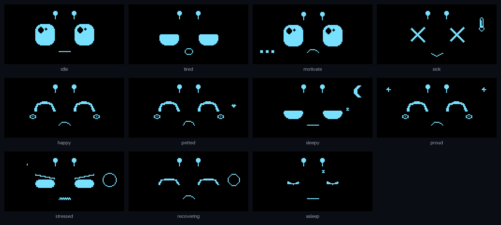
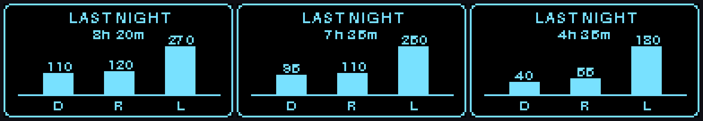
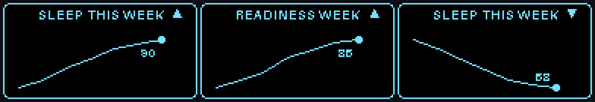
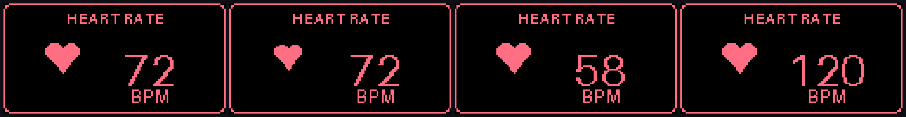
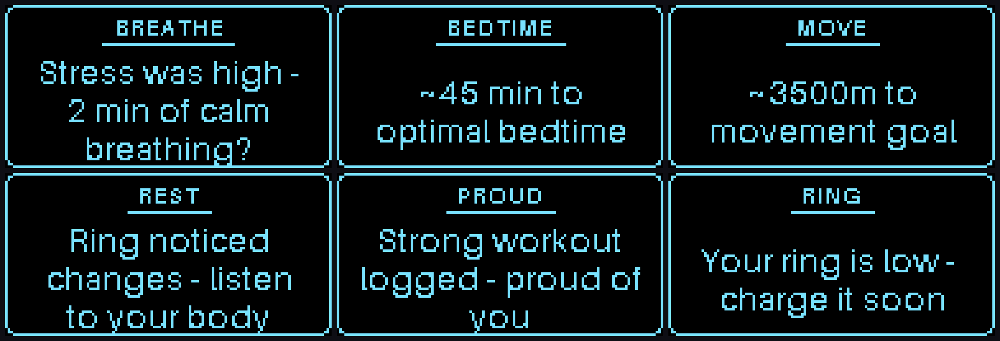

Oura API · Raspberry Pi · Python
Meet Ouri,
your wellness desk buddy.
A tiny robot that reads your Oura data and wears it on its face — tired after a rough night, proud of a strong workout, winding down at bedtime. Gentle company for a healthier day, not another dashboard.
The screen on the right is the real face engine, running live in your browser. Tap a mood — or pet it.
Expressive by design
One little face, a whole range of moods.
Every expression is hand-drawn for a 128×64 monochrome OLED — glossy eyes lead the emotion, with antennae, a soft mouth, and small touches like sleepy z's, proud sparkles, or a worried brow.

A daily rhythm
Ouri keeps you company all day.
A configurable daily arc decides when Ouri sleeps, greets you, and nudges you — so it feels present without being noisy.
Quiet hours
The screen sleeps with a calm closed-eye face to protect the OLED.
Briefing
A greeting, last night's sleep recap, your 7-day trend, and a reaction.
Living mood
Ouri reflects how you're doing and nudges you to move when sedentary.
Wind-down
A gentle nudge as your optimal bedtime approaches.

Wake up to a sleep recap
The morning briefing leads with last night at a glance: total time asleep plus a deep / REM / light breakdown drawn as a tidy little bar chart.
- Deep
- REM
- Light
- Total duration

See the week, not just the day
Ouri reads your last seven days and shows a sparkline with an up / down / flat arrow — then reacts: celebrating a good-sleep streak, or gently flagging when readiness is sliding.
- Trajectory
- Streaks
- Sleep · Readiness · Activity

Pet it to check your pulse
Give Ouri a pet and it reads your heart rate — a heart pulses on screen at your live BPM, pulled from Oura's intraday heart-rate data. Try it on the device above.
- Live heart rate
- Touch interaction
- Pulse animation

Readable reminders, never nagging
When something's worth saying, Ouri flips to a full-screen card with a single, legible message — then returns to its face. Faces and text never share the small screen.
- Wellness-first
- One thing at a time
Under the hood
Built to be swappable.
Clean, testable layers behind small protocols — so trading fixtures for live data, or the emulator for real hardware, is a config change, not a rewrite.
Pure rules engine
Wellness thresholds map a snapshot to a state and a reminder — small functions, fully unit-tested.
Hardware-agnostic display
The same render_face code drives a Pygame emulator today and an SSD1306 OLED on a Pi tomorrow.
Real Oura data
OAuth, intraday heart rate, sleep stages, resilience and a 7-day backfill for trends — validated on a real ring.